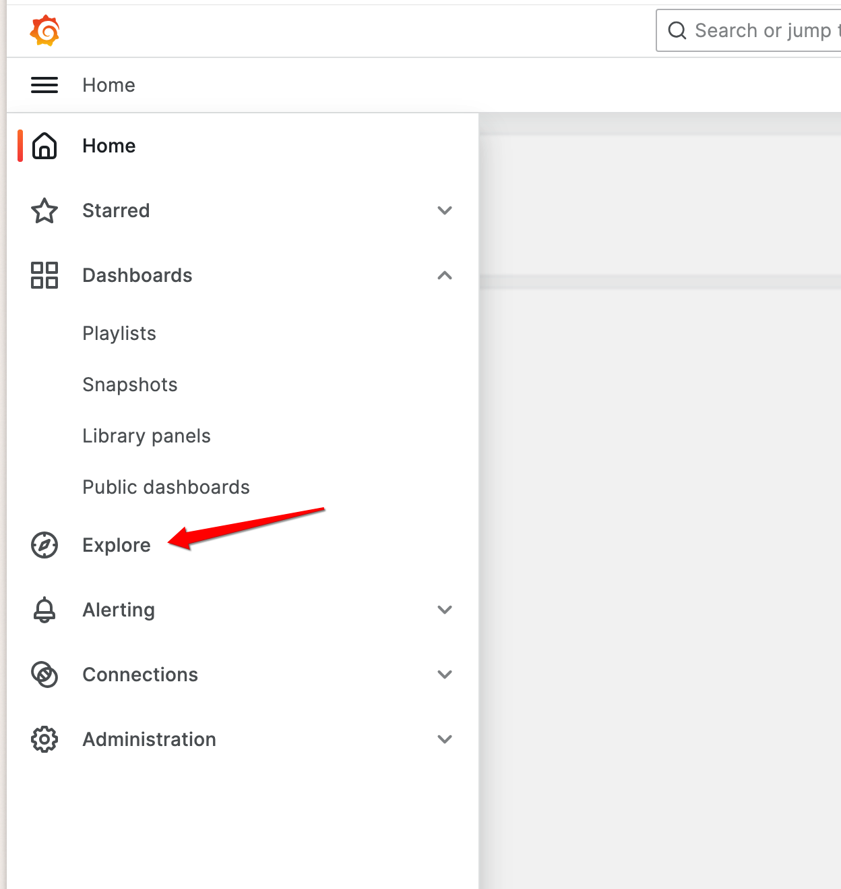
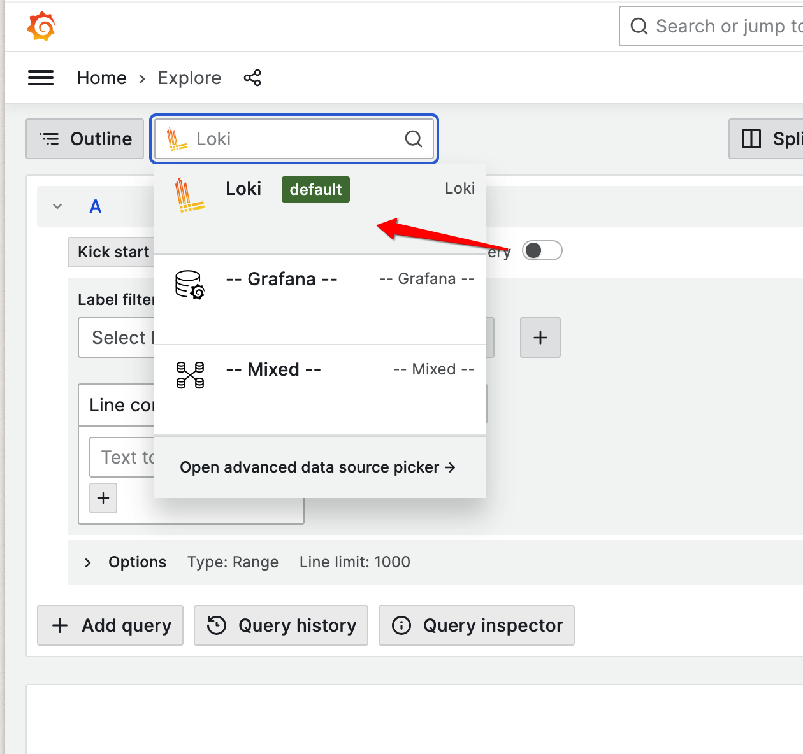
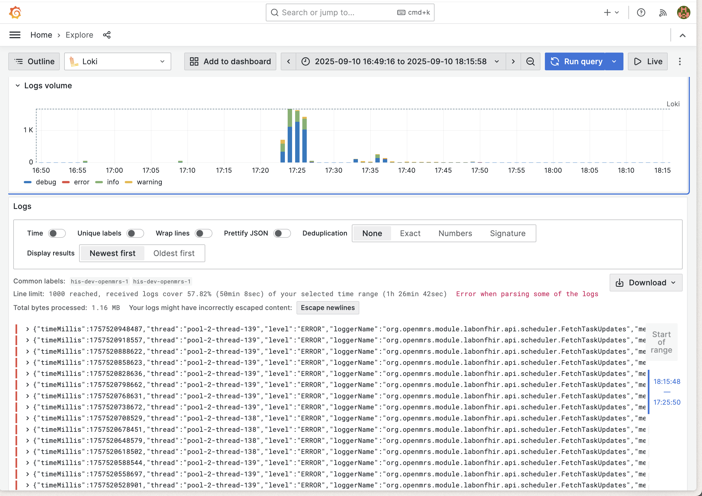
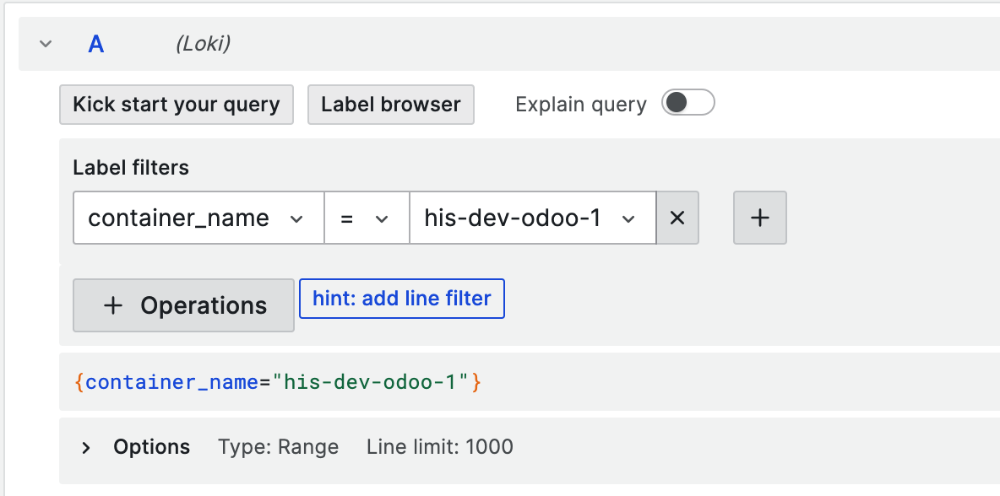

Logging
Log analysis is crucial for monitoring, troubleshooting, and maintaining your Ozone deployment. This guide focuses on how to query and analyze logs from your Ozone services using Grafana and LogQL.
Overview
Ozone comes with built-in centralized logging using Grafana Agent, Loki, and Grafana. All services output structured logs that are automatically collected and made available for querying and analysis through Grafana's interface.
Log Levels
Ozone supports standard log levels that can be configured per service:
ERROR- Error conditions that need immediate attentionWARN- Warning conditions that should be monitoredINFO- General informational messages (default level)DEBUG- Detailed diagnostic informationTRACE- Very detailed execution flow information
Accessing Logs
Grafana Interface
The primary way to access and query logs is through the Grafana interface:
- Navigate to Grafana - Usually available at
http://your-domain:3000 - Go to Explore - Click on the "Explore" section in the left menu 
- Select Loki - Choose Loki as your data source 
- Query logs - Use plain LogQL or the Query Builder to filter and analyze your logs
- Run Query - Click on
Run Queryto fetch the logs matching your query 
Log Structure and Labels
Ozone services output structured logs with consistent labeling for easy filtering and analysis:
Available Log Labels
All log entries include these basic labels:
container_name- The name of the container generating the logjob- The logging job (typically "containerlogs")
Example: Filter Odoo logs only
This means that the first filter you can do in Grafana could be to filter by container_name.
For instance, to explore the Odoo logs only:
In LogQL, that would be:
{container_name="his-dev-odoo-1"}

On top of the shared labels, each service will have its own set of labels.
OpenMRS Logs
OpenMRS in Ozone is configured to output structured JSON logs with detailed metadata:
Example log line:
{
"timeMillis": 1754965124179,
"thread": "pool-2-thread-2",
"level": "WARN",
"loggerName": "org.openmrs.util.OpenmrsUtil",
"message": "Unable to find a runtime properties file at /openmrs/openmrs-runtime.properties",
"endOfBatch": false,
"loggerFqcn": "org.apache.logging.slf4j.Log4jLogger",
"contextMap": {},
"threadId": 54,
"threadPriority": 5
}
Available JSON fields for OpenMRS:
timeMillis- Log timestamp in milliseconds (epoch time)level- Log level (ERROR,WARN,INFO,DEBUG,TRACE)loggerName- Java logger class namethread- Processing thread namemessage- Log message contentendOfBatch- Indicates if this is the last log in a batchloggerFqcn- Fully qualified class name of the loggercontextMap- Mapped Diagnostic Context with request/user datathreadId- Numeric thread identifierthreadPriority- Thread priority level
EIP/Camel Logs
EIP services output structured JSON logs with integration-specific metadata:
{
"@timestamp": "2025-08-08T11:26:54.391196959Z",
"@version": "1",
"message": "Polling Tasks completed.",
"logger_name": "poll-senaite",
"thread_name": "Camel (camel-1) thread #10 - CamelFhir",
"level": "INFO",
"level_value": 20000
}
Available JSON fields for EIP:
@timestamp- Log timestamp in ISO 8601 format@version- Log format versionlevel- Log level (ERROR,WARN,INFO,DEBUG,TRACE)level_value- Numeric log level valuelogger_name- Logger identifier (often route or component name)thread_name- Camel thread name with context informationmessage- Log message content
Odoo Logs
Odoo is a Python-based ERP service that outputs plain text logs in a structured format:
2025-08-11 05:25:39,107 83 INFO odoo odoo.modules.registry: Registry loaded in 21.265s
2025-08-11 05:25:39,106 83 INFO odoo odoo.addons.odoo_initializer.activator: initialization done
2025-08-11 05:25:39,103 83 INFO odoo odoo.addons.odoo_initializer.utils.data_files_utils: Skipping already processed file: ir.ui.view.1000.csv
Odoo log format structure:
YYYY-MM-DD HH:MM:SS,mmm- Timestamp with millisecondsPID- Process ID (e.g., 83)LEVEL- Log level (DEBUG, INFO, WARNING, ERROR, CRITICAL)database- Database name (e.g., "odoo")module- Python module/addon namemessage- Log message content
Note
Note Odoo logs are plain text, not JSON. Use regular expression patterns for filtering.
SENAITE Logs
SENAITE is a Python-based LIMS service that outputs mixed log formats:
Python Application Logs: Example log line:
2025-08-11 05:42:15,744 INFO [senaite.jsonapi:60][waitress-1] Catalog query={'getClientID': '72f979bb-f153-41bd-9ffc-03128197e9d6', 'portal_type': 'AnalysisRequest', 'sort_order': 'ascending', 'getClientSampleID': '1a58e113-ff32-4e62-867b-365ff7d0e41c'}
YYYY-MM-DD HH:MM:SS,mmm- Timestamp with millisecondsLEVEL- Log level (DEBUG, INFO, WARNING, ERROR, CRITICAL)[module:line]- Python module and line number[thread]- Thread name (e.g., waitress-1)message- Log message content
Nginx Access Logs: Example log line:
172.23.0.11 - admin [11/Aug/2025:05:42:15 +0000] "GET /senaite/%40%40API/senaite/v1/AnalysisRequest?getClientSampleID=1a58e113-ff32-4e62-867b-365ff7d0e41c&getClientID=72f979bb-f153-41bd-9ffc-03128197e9d6&catalog=senaite_catalog_sample&complete=true HTTP/1.1" 200 6120 "-" "Apache-HttpClient/5.2.1 (Java/17.0.16)"
- Standard Nginx Combined Log Format
IP address,user,timestamp,request,status,size,referer,user-agent
Note
SENAITE logs are plain text, not JSON. Use regular expression patterns for filtering different log types.
Other Container Logs
Services without structured JSON logging output standard container logs:
- Container name labeling for service identification
- Standard log levels and timestamps
- Plain text messages
Querying Logs with LogQL
LogQL is Loki's query language for filtering and analyzing logs. This section provides practical examples for querying Ozone logs.
Query Structure
All LogQL queries follow this basic structure:
{label_filters} | processing_stages | output_formatting
For Ozone logs, you'll typically start with container name filtering and then apply JSON parsing or regex matching depending on the service.
Basic Filtering on the container_name label
# All logs from OpenMRS container
{container_name="ozone-openmrs-1"}
# All logs from EIP containers
{container_name=~"ozone-eip-.*"}
# All logs from specific Ozone services
{container_name=~"ozone-openmrs-1|ozone-odoo-1|ozone-senaite-1"}
JSON Log Parsing (OpenMRS & EIP clients)
For services that output structured JSON logs.
Always specify only the JSON fields you need (e.g., json level instead of json) to avoid high cardinality and improve query performance:
# Filter OpenMRS logs by level
{container_name="ozone-openmrs-1"} | json level | level="error"
# Filter by specific logger
{container_name="ozone-openmrs-1"} | json loggerName | loggerName=~".*OpenmrsUtil.*"
# Monitor specific thread activity
{container_name="ozone-openmrs-1"} | json thread | thread="pool-2-thread-2"
# Database connection monitoring
{container_name="ozone-openmrs-1"} | json loggerName | loggerName=~".*LocalContainerEntityManagerFactoryBean.*"
# EIP integration monitoring
{container_name=~"ozone-eip-.*"} | json logger_name | logger_name="poll-senaite"
# Monitor Camel threads
{container_name=~"ozone-eip-.*"} | json thread_name | thread_name=~".*Camel.*"
Simple Line Filter (Odoo & SENAITE)
For services that output plain text logs:
# Filter Odoo logs by level
{container_name="ozone-odoo-1"} |~ "ERROR|WARNING"
# Monitor Odoo modules
{container_name="ozone-odoo-1"} |~ "odoo\\.addons\\..*res_users"
# SENAITE API monitoring
{container_name="ozone-senaite-1"} |~ "GET /senaite/.*API"
# Track SENAITE operations
{container_name="ozone-senaite-1"} |~ "AnalysisRequest|getClientID"
Rate and Volume Queries
For monitoring error rates and log volume:
# Error rate per minute by service
rate({container_name="ozone-openmrs-1"} | json level | level="error"[1m])
rate({container_name=~"ozone-eip-.*"} | json level | level="ERROR"[1m])
rate({container_name="ozone-odoo-1"} |~ "ERROR"[1m])
rate({container_name="ozone-senaite-1"} |~ "ERROR"[1m])
# Total log volume per minute
rate({container_name="ozone-openmrs-1"}[1m])
rate({container_name=~"ozone-eip-.*"}[1m])
rate({container_name="ozone-odoo-1"}[1m])
rate({container_name="ozone-senaite-1"}[1m])
Aggregation Queries
For counting and grouping log entries:
# Count of log entries by service over 5 minute windows
sum by (container_name) (count_over_time({container_name=~"ozone-.*"}[5m]))
# Count of errors by OpenMRS logger
sum by (loggerName) (count_over_time({container_name="ozone-openmrs-1"} | json loggerName, level | level="error"[5m]))
# Count of EIP activities by component
sum by (logger_name) (count_over_time({container_name=~"ozone-eip-.*"} | json logger_name | logger_name!=""[5m]))
# Top log generating threads in OpenMRS
topk(5, sum by (thread) (count_over_time({container_name="ozone-openmrs-1"} | json thread[5m])))
# Top error-generating threads in OpenMRS
topk(5, sum by (thread) (count_over_time({container_name="ozone-openmrs-1"} | json thread, level | level="error"[5m])))
# Count by log level across OpenMRS
sum by (level) (count_over_time({container_name="ozone-openmrs-1"} | json level[5m]))
Time-based Analysis
For trending and historical analysis:
# Error count over time windows
count_over_time({container_name="ozone-openmrs-1"} | json level | level="error"[5m])
# Integration poll activity trends
count_over_time({container_name=~"ozone-eip-.*"} | json logger_name | logger_name=~".*poll.*"[5m])
# Database activity over time
count_over_time({container_name="ozone-openmrs-1"} | json loggerName | loggerName=~".*hikari.*"[5m])
# Error rate trends
rate({container_name="ozone-openmrs-1"} | json level | level="error"[5m])
# Combined service activity over time
sum(count_over_time({container_name=~"ozone-.*"}[5m])) by (container_name)
Log Monitoring and Alerting
Key Metrics to Monitor
Suggested patterns to monitor efficiently your logs and track system health:
- Error Rates: Track
ERRORandWARNlevel logs across all services - Performance: Monitor slow query logs and response times
- Authentication: Track login failures and security events
- Integration: Monitor EIP message processing errors and timeouts
- Database: Watch for connection pool exhaustion and deadlocks
- Camel Routes: Monitor route failures and processing delays
LogQL Queries Tips and Best Practices
Query Optimization
- Start with container filters - Always begin queries with container name filters to reduce search scope
- Use specific time ranges - Limit queries to relevant time periods for better performance
- Combine filters efficiently - Use JSON pipe after initial filtering to minimize processing
- Leverage regex patterns - Use regex for flexible pattern matching in log messages
EIP Integration Monitoring
Use EIP logs with route_id and exchange_id labels to trace individual message flows through your integration pipelines.
Performance Monitoring
Combine structured logging with Grafana metrics and APM tools for comprehensive system observability.
Label Management
Keep Loki labels minimal and use JSON pipe for detailed filtering. High cardinality labels can significantly impact Loki performance.
Alternative: Directly accessing logs using Docker CLI
As an alternative (if you are not running the logging service or just require quick access) you can still access logs directly in the terminal:
# View logs for a specific service
docker-compose -p <ozone> logs openmrs
# Follow logs in real-time
docker-compose -p <project> logs -f
# Limit log output
docker-compose -p <project> logs --tail=100 openmrs
# Display the 500 last log lines of a particular container and prettify the output when in JSON format
docker logs -f --tail=500 <container_name> | jq -R -M '(fromjson? // .)'